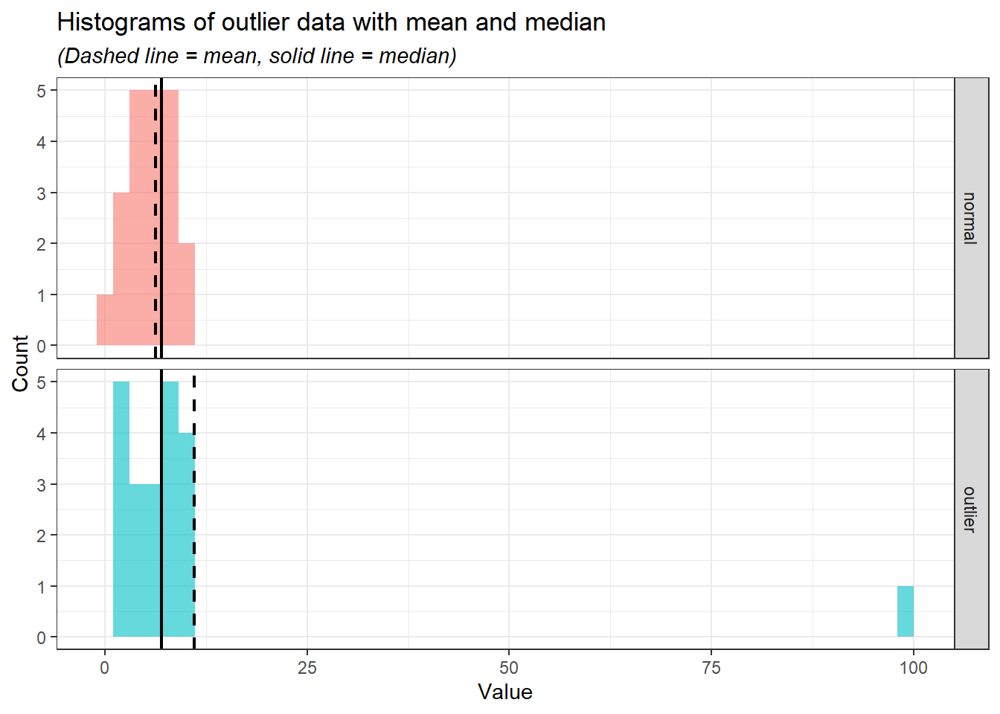
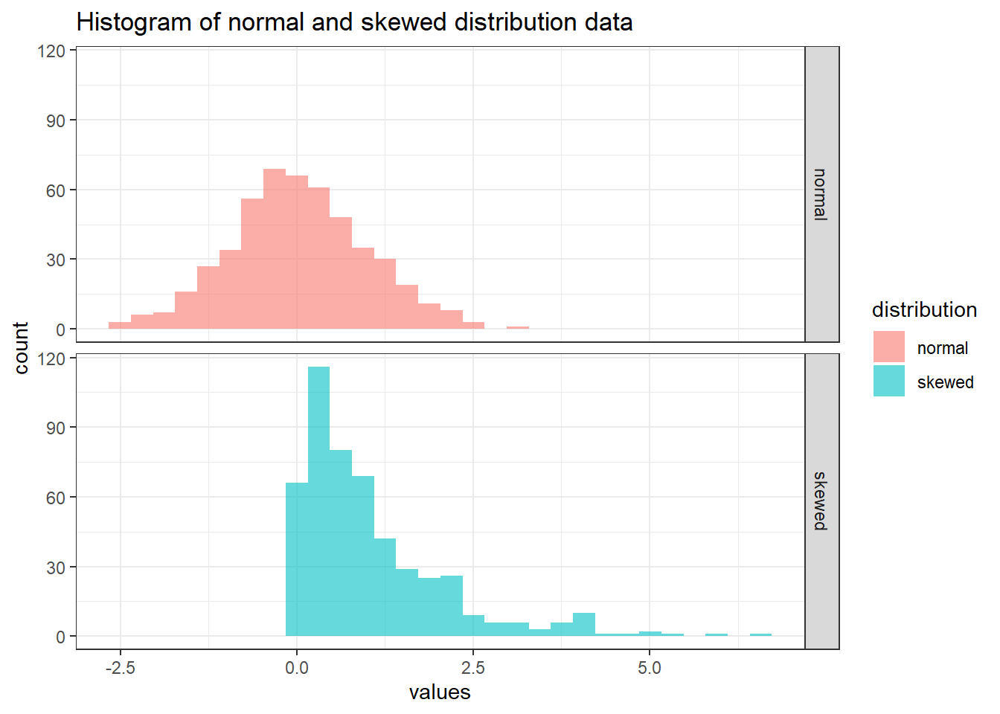
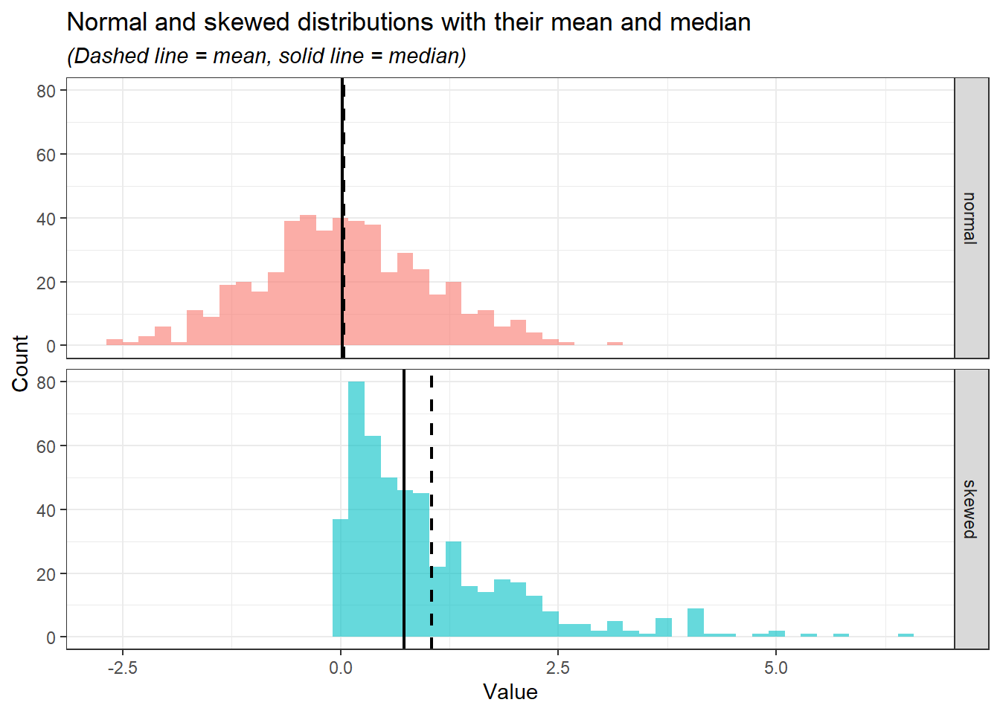
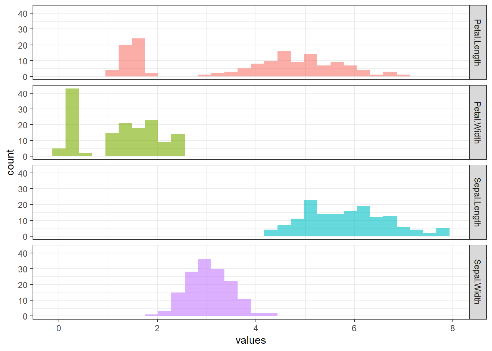

# Install the packages if necessary
install.packages("tidyverse")
install.packages("DescTools")
install.packages("summarytools")
install.packages("gtsummary")
# Load the packages
library(tidyverse)9 Descriptive statistics
“Descriptive statistics are not just numbers; they tell stories about data.”
– Anonymous
Descriptive statistics, as the name suggests, involves summarizing and describing the main features of a dataset. It allows us to distil large or complex datasets into manageable summaries, making it easier to interpret and understand the data. While some details are inevitably lost during this process, we gain valuable insights and a clearer direction for further analysis.
This statistical approach is crucial in data analysis because it provides a foundation for understanding the overall structure of the data. Descriptive statistics use measures such as central tendency (mean, median, and mode), variability (range, variance, and standard deviation), and data visualization tools (like histograms and pie charts) to offer a clear overview of the data’s characteristics.
By simplifying the data, descriptive statistics not only highlight trends and patterns but also serve as a stepping stone for more advanced statistical methods. In this chapter, we will cover the fundamentals of descriptive statistics, helping you understand its key concepts, techniques, and practical applications.
9.1 Load packages
Please load these packages before proceeding to the next section.
9.2 Measures of central tendency
Measures of central tendency aim to identify the centre or typical value within a dataset. It provides a summary of the data by describing the point around which most values cluster.
Mean
The mean represents the average of a dataset. It is calculated by summing all the values in the dataset and dividing the total by the number of values. \[ Mean(\overline{x}) = \frac{\sum x}{n} \]
For example, to calculate the mean manually for the numbers:
\[ 5, 6, 7, 8, 13, 2 \]
Sum up all the values (\(\Sigma x\)).
\[ 5 + 6 + 7 + 8 + 13 + 2 = 41 \]
Divide the sum of all the values by the count of the values (\(n\)).
\[ \frac{41}{6} = 6.83 \]
Alternatively, R provides a mean() function to calculate the mean of values.
# The values
x_mean = c(5, 6, 7, 8, 13, 2)
# Calculate mean
mean(x_mean)[1] 6.833333Median
The median represents the middle value in a sorted dataset. It divides the dataset into two halves: 50% of the data values are smaller than the median, and 50% are larger.
For example, to determine the median for the below values:
\[ 5, 6, 7, 8, 13, 2 \]
Sort the values in order from the smallest to the largest.
\[ 2, 5, 6, 7, 8, 13 \]
Determine the middle values (if there are two middle values, calculate the average of the two values).
\[ \frac{6 + 7}{2} = 6.5 \]
Alternatively, to calculate the median in R, we can use the median() function.
# The values
x_med = c(5, 6, 7, 8, 13, 2)
# Calculate the median
median(x_med)[1] 6.5Mode
The mode represents the most frequently occurring value in a dataset. It is the value that appears the most times. Unlike the mean or median, the mode can be used for both numerical and categorical data.
For example, to determine the mode for the numbers:
\[ 5, 6, 7, 8, 13, 2, 8, 1 \]
The mode is the most frequent value which is 8.
In R, there is no function in base R to determine the mode. We can manually determine the mode in R.
# Range of values
x_mode_num = c(5, 6, 7, 8, 13, 2, 8, 1)
# Calculate the count for each value
x_mode_num_table <-
x_mode_num %>%
table() %>%
as.data.frame()
x_mode_num_table . Freq
1 1 1
2 2 1
3 5 1
4 6 1
5 7 1
6 8 2
7 13 1# Determine the frequently appearing value
x_mode_num_table %>%
filter(Freq == max(Freq)) . Freq
1 8 2Additionally, we can determine the mode for the categorical data using the same approach:
# Range of values
x_mode_cat <- c("yes", "no", "unsure", "yes", "yes", "no")
# Calculate the count for each value
x_mode_cat_table <-
x_mode_cat %>%
table() %>%
as.data.frame()
x_mode_cat_table . Freq
1 no 2
2 unsure 1
3 yes 3# Determine the frequently appearing value
x_mode_cat_table %>%
filter(Freq == max(Freq)) . Freq
1 yes 3Alternatively, there are several packages available to determine the mode. For example, we can use the DescTools package.
# Determine the mode for numerical values
DescTools::Mode(x_mode_num)[1] 8
attr(,"freq")
[1] 2# Determine the mode for categorical values
DescTools::Mode(x_mode_cat)[1] "yes"
attr(,"freq")
[1] 3The Mode() function from DescTools returns the mode value and the frequency of the values. For example, yes is the mode and it appears in the data 3 times.
9.2.1 Comparison of mean, median, and mode
Mean vs. median
The mean is sensitive to outliers compared to the median and mode. In the presence of outliers, the median is more robust and thus, preferred to describe the central tendency of the data. Let’s demonstrate the change of mean and median in the presence of the outliers.
Firstly, let’s create the data with and without the outlier.
# Set seed for reproducibility
set.seed(123)
# Create data
outlier_data <- data.frame(
outlier = c(sample(x = c(1:10), size = 20, replace = TRUE), 100),
normal = sample(x = c(1:10), size = 21, replace = TRUE)
)Before we demonstrate further, let’s change the data structure, so, that it is easier to do the plots.
outlier_data_long <-
outlier_data %>%
# Change data structure to long data
pivot_longer(cols = 1:2, names_to = "Variable", values_to = "Value")Let’s plot the boxplot for both data to visualise the outlier.
outlier_data_long %>%
ggplot(aes(x = Value, fill = Variable)) +
geom_boxplot(alpha = 0.6) +
theme_bw() +
labs(
title = "Boxplot of variables with and without the outlier",
x = "Value",
y = "Frequency"
)We can see the outlier in the var_outlier. If we plot the histogram for both variables, we can further visualise the distribution of the data.
outlier_data_long %>%
ggplot(aes(x = Value, fill = Variable)) +
geom_histogram(alpha = 0.6, bins = 50) +
facet_grid(rows = vars(Variable)) +
theme_bw() +
labs(
title = "Histogram of variables with and without the outlier",
x = "Value",
y = "Frequency"
) +
theme(legend.position = "none")In the histogram, it is evident that the majority of values are concentrated between 0 and 25. When comparing the mean and median for both variables, with and without the outlier, the median demonstrates greater stability irrespective of the outlier’s presence. The medians for both variables remain relatively similar, whereas the means show significant variation, reflecting the mean’s sensitivity to outliers.
summary_stats <-
outlier_data_long %>%
group_by(Variable) %>%
summarise(
mean = mean(Value),
median = median(Value)
)
summary_stats# A tibble: 2 × 3
Variable mean median
<chr> <dbl> <dbl>
1 normal 6.19 7
2 outlier 11 7Let’s put the values of the mean and median onto a histogram so that we can see how these values change in the presence of the outlier.
outlier_data_long %>%
ggplot(aes(x = Value, fill = Variable)) +
geom_histogram(alpha = 0.6, bins = 50) +
geom_vline(
data = summary_stats,
aes(xintercept = mean, color = Variable),
linetype = "dashed",
linewidth = 0.8
) +
geom_vline(
data = summary_stats,
aes(xintercept = median, color = Variable),
linetype = "solid",
linewidth = 0.8
) +
scale_color_manual(values = c("black", "black")) +
labs(
title = "Histograms of outlier data with mean and median",
x = "Value",
y = "Count",
subtitle = "(Dashed line = mean, solid line = median)"
) +
facet_grid(rows = vars(Variable)) +
theme_bw() +
theme(
legend.position = "none",
plot.subtitle = element_text(face = "italic")
) 
From the histograms, we can see the median (solid line) is relatively at the same position while the mean (the dashed line) moves according to the outlier.
Besides the sensitivity of the mean to the outliers, the mean is the best measure of central tendency for normally distributed data because it incorporates all data points and accurately reflects the centre of a symmetric distribution. In a normal distribution, data points are symmetrically distributed around the mean, and thus, the mean provides a reliable measure of the “typical” value. However, it is to be noted despite the mean being more preferred in normal distribution, the values of median and mode are very close to the mean.
On the other hand, for the skewed distribution, the median is preferred because it is not influenced by extreme values (outliers) that can distort the mean. In a skewed distribution, where data points are unevenly spread, the median represents the middle value, providing a better reflection of the “typical” data point compared to the mean. This makes the median more robust when dealing with outliers and skewed data, as the mean may be pulled toward the skewed tail, giving a misleading representation of central tendency.
Again, let’s demonstrate this point in R. First, we create the data consisting of two variables of normal and skewed distributions.
# Set seed for reproducibility
set.seed(123)
# Create data
distribution_data <-
data.frame(
normal = rnorm(500, mean = 0, sd = 1),
# Create a skewed distribution variable (an exponential distribution with rate = 1)
skewed = rexp(500, rate = 1))Next, we need to change the data structure to a long data type to fully explore the data.
distribution_data_long <-
distribution_data %>%
pivot_longer(cols = 1:2, names_to = "distribution", values_to = "values")We going to plot the histogram to visualise the distributions.
distribution_data_long %>%
ggplot(aes(x = values, fill = distribution)) +
geom_histogram(bins = 30, alpha = 0.6) +
facet_grid(rows = vars(distribution)) +
labs(title = "Histogram of normal and skewed distribution data") +
theme_bw()
Next, let’s calculate the mean and median for each of the distributions.
summary_stat_dist <-
distribution_data_long %>%
group_by(distribution) %>%
summarise(
mean = mean(values),
median = median(values)
)
summary_stat_dist# A tibble: 2 × 3
distribution mean median
<chr> <dbl> <dbl>
1 normal 0.0346 0.0207
2 skewed 1.05 0.727 Notice that the mean and median for normal distribution are close while skewed distribution is otherwise. Let’s visualise the mean and median in the histogram.
distribution_data_long %>%
ggplot(aes(x = values, fill = distribution)) +
geom_histogram(alpha = 0.6, bins = 50) +
geom_vline(
data = summary_stat_dist,
aes(xintercept = mean, color = distribution),
linetype = "dashed",
linewidth = 0.8
) +
geom_vline(
data = summary_stat_dist,
aes(xintercept = median, color = distribution),
linetype = "solid",
linewidth = 0.8
) +
scale_color_manual(values = c("black", "black")) +
labs(
title = "Normal and skewed distributions with their mean and median",
x = "Value",
y = "Count",
subtitle = "(Dashed line = mean, solid line = median)"
) +
facet_grid(rows = vars(distribution)) +
theme_bw() +
theme(
legend.position = "none",
plot.subtitle = element_text(face = "italic")
) 
In the normal distribution, despite the values of mean and median being close, the mean is preferred as it takes into account the whole range of values mathematically. However, in the skewed distribution, the median is preferred as it is less affected by the extreme values and sparsity of the values as compared to the mean.
Mode vs. mean and median
Lastly, the mode is less useful for the data analysis compared to the mean and median. Moreover, the mode may not be unique or exist in certain datasets. Let’s demonstrate these cases:
Mode values are not unique.
# Values two_mode_data <- c("yes", "no", "unsure", "yes", "yes", "no", "no") # Determine the mode DescTools::Mode(two_mode_data)[1] "no" "yes" attr(,"freq") [1] 3Mode value does not exist.
# Values mode_not_exist <- c("yes", "unsure", "no") # Determine the mode DescTools::Mode(mode_not_exist)[1] NA attr(,"freq") [1] NA
9.3 Measures of variability
Measures of variability describe the spread or dispersion of data points in a dataset. These measures indicate how much the data values differ from each other and from the central tendency (e.g., mean or median).
Range
The range is the difference between maximum and minimum values in a dataset.
\[ Range = Maximum - Minimum \]
For example, the range for this range of values:
\[ 1, 2, 5, 8, 10, 5 \]
Identify the maximum and minimum values.
\[ Maximum = 10, Minimum = 1 \]
Calculate the range.
\[ 10 - 1 = 9 \]
In R, we have a range() function. However, instead of giving a range, the range() function returns a minimum and maximum value.
# The numeric values
x_range <- c(1, 2, 5, 8, 10, 5)
# Range function
range(x_range)[1] 1 10To calculate the range in R, we can utilise max() and min() functions, which identify the maximum and minimum values, respectively.
max(x_range) - min(x_range)[1] 9Variance
Variance measures the average squared difference of each data point from the mean. It shows how data points spread around the mean in squared units.
\[ Variance (s^{2}) = \frac{\sum (x_{i} - \overline{x})^{2}}{n-1} \]
For example, to calculate the variance for these data points:
\[ 3, 5, 6, 8, 2, 9 \]
Calculate the mean (\(\overline{x}\)).
\[ \frac{3 + 5 + 6 + 8 + 2 + 9}{6} = 5.5 \]
Calculate the difference between each data point and mean, square it, and sum up all the squared differences (\(\sum (x_{i} - \overline{x})^{2}\)).
\[ (3-5.5)^{2}+(5-5.5)^{2}+(6-5.5)^{2}+(8-5.5)^{2}+(2-5.5)^{2}+(9-5.5)^{2} = 37.5 \]
Divide the value by the count of the numbers (\(n-1\)).
\[ \frac{37.5}{6-1} = 7.5 \]
In R, we can calculate the variance using the var() function.
# The values
x_variance <- c(3, 5, 6, 8, 2, 9)
# Calculate variance
var(x_variance)[1] 7.5The equation that we used to calculate the variance manually and the one in R is known as sample variance. There is another equation known as population variance. The sample variance is used to describe the spread out of the values in a sample, while population variance describes the spread out of the values in a population.
\[ \begin{align*} \text{Sample variance}(s^{2}) = \frac{\sum (x_{i} - \overline{x})^{2}}{n-1}\\ \text{Population variance}(\sigma^{2})= \frac{\sum (x_{i} - \mu)^{2}}{N} \end{align*} \]
Notice the slight differences in the denominators of the two equations. Sample variance is calculated for a subset of data and includes an adjustment for smaller sample sizes by dividing by \(n-1\) instead of \(n\). This correction (known as Bessel’s correction) ensures that the sample variance is an unbiased estimate of the population variance. In contrast, population variance is calculated for the entire dataset and does not require this adjustment. Additionally, instead of using sample mean (\(\overline{x}\)), population variance is using the population mean (\(\mu\)).
In practical data analysis, we are almost always working with a sample rather than the entire population. As a result, the formula for sample variance is typically used to estimate the variability of the dataset.
Standard deviation
Standard deviation is the square root of the variance, providing a measure of dispersion in the same units as the data. A smaller value indicates less variability and a larger value indicates greater variability.
\[ \text{Standard deviation}(SD) = \sqrt{Variance} \]
For example, to calculate the standard deviation for these numbers:
\[ 3, 5, 6, 8, 2, 9 \]
Calculate the sample variance (\(s^{2}\)).
\[ \frac{(3-5.5)^{2}+(5-5.5)^{2}+(6-5.5)^{2}+(8-5.5)^{2}+(2-5.5)^{2}+(9-5.5)^{2}}{6-1} = 7.5 \]
Square root the sample variance (\(s^{2}\)).
\[ \sqrt{7.5} = 2.74 \]
In R, we can use the sd() function to calculate the standard deviation, This function uses sample variance to calculate the standard deviation.
# The values
x_sd <- c(3, 5, 6, 8, 2, 9)
# Calculate variance
sd(x_sd)[1] 2.738613Interquartile range
The interquartile range describes the range of the middle 50% of the data (the difference between the third quartile and first quartile).
\[ \text{Interquartile range}(IQR) = Q_{3} - Q_{1} \]
To calculate the interquartile range for these numbers:
\[ 3, 5, 6, 8, 2, 9 \]
Divide the data into lower half and upper half
\[ \begin{align*} \text{Lower half} = 2, 3, 5\\ \text{Upper half} = 6, 8, 9 \end{align*} \]
Identify the median of the lower half (first quartile, \(Q_{1}\)) and the median of the upper half (third quartile, \(Q_{3}\)).
\[ \begin{align*} \text{Median of lower half}(Q_{1}) = 3\\ \text{Median of the upper half} (Q_{3}) = 8 \end{align*} \]
Calculate the interquartile range.
\[ 8-3 = 5 \]
In R, we can use IQR() to calculate the interquartile range.
# The values
x_iqr <- c(3, 5, 6, 8, 2, 9)
# Calculate interquartile range
IQR(x_iqr, type = 2)[1] 5IQR() actually uses the quantile() function to calculate the quartiles, subsequently calculating the interquartile range. quantile() with type = 2 reflects the exact first and the third quartile that we manually calculate. quantile() and IQR() have 9 types of algorithms or formulas to calculate the quartile in R. The default, both functions use type = 7. However, Hyndman & Fan proposed to use type 8 (1996).
# Quantile type 2 reflects our manual calculation
quantile(x_iqr, type = 2) 0% 25% 50% 75% 100%
2.0 3.0 5.5 8.0 9.0 # IQR type 2 reflects our manual calculation
IQR(x_iqr, type = 2)[1] 5# Quantile type 7 is the default
# We don't actually need to specify the type since it is the default
quantile(x_iqr, type = 7) 0% 25% 50% 75% 100%
2.0 3.5 5.5 7.5 9.0 # IQR type 7 is the default
IQR(x_iqr, type = 7)[1] 4# Quantile type 8
quantile(x_iqr, type = 8) 0% 25% 50% 75% 100%
2.000000 2.916667 5.500000 8.083333 9.000000 # IQR type 8
IQR(x_iqr, type = 8)[1] 5.166667Briefly, I suggest using type = 7 or type = 8 for calculating the quartile and interquartile range. For accuracy, we can use type = 8 as proposed by Hyndman & Fan(1996). For simplicity, we can use type = 7 as it is the default in R and widely used in other statistical software as well.
9.4 Packages for descriptive statistics
We have covered in Section 8.3 several general packages for data exploration which includes descriptive statistics. In this, section we going to explore two useful packages for descriptive statistics: summarytools and gtsummary. It is to be noted that there are several other R packages available for descriptive statistics, to name a few: psych, pastecs, and Hmisc.
summarytools
summarytools provides an easy-to-use function for descriptive statistics. For numerical variables, we can use descr(). We going to use the iris dataset to demonstrate the capabilities of summarytools. More details on the iris dataset can be read by typing ?iris in the
# Load packages
library(summarytools)
Attaching package: 'summarytools'The following object is masked from 'package:tibble':
view# Descriptive statistics for numerical data
descr(iris %>% select(-Species))Descriptive Statistics
iris
N: 150
Petal.Length Petal.Width Sepal.Length Sepal.Width
----------------- -------------- ------------- -------------- -------------
Mean 3.76 1.20 5.84 3.06
Std.Dev 1.77 0.76 0.83 0.44
Min 1.00 0.10 4.30 2.00
Q1 1.60 0.30 5.10 2.80
Median 4.35 1.30 5.80 3.00
Q3 5.10 1.80 6.40 3.30
Max 6.90 2.50 7.90 4.40
MAD 1.85 1.04 1.04 0.44
IQR 3.50 1.50 1.30 0.50
CV 0.47 0.64 0.14 0.14
Skewness -0.27 -0.10 0.31 0.31
SE.Skewness 0.20 0.20 0.20 0.20
Kurtosis -1.42 -1.36 -0.61 0.14
N.Valid 150.00 150.00 150.00 150.00
Pct.Valid 100.00 100.00 100.00 100.00We can see that descr() returns several familiar measures for descriptive statistics such as mean, standard deviation (Std.Dev), minimum value, maximum value, median, first and third quartile. There are several other measures that we have not covered previously:
MAD:- Describes the median of the absolute deviations of the data points from the median of the dataset.
- A small MAD indicates that most data points are close to the median, reflecting low variability and a large MAD suggests greater spread, meaning data points are more dispersed from the median.
- Unlike the variance and standard deviation is less sensitive to outliers, thus, making it more suitable for a skewed distribution.
CV:CV or coefficient of variation is a relative measure of variability. It reflects the ratio of standard deviation (\(s^{2}\)) to the mean (\(\overline{x}\)).
\[ \begin{align*} CV = \frac{s^{2}}{\overline{x}}\\ 0.47 =\frac{1.77}{3.76} \end{align*} \]
Low CV indicates less variability relative to the mean, suggesting consistency and uniformity in the dataset, while high CV indicates greater variability relative to the mean, which could imply inconsistency or a wide spread of data values.
There is no exact value of CV that we can rate the variability of the data, however, as a rule of thumb:
- CV < 0.3 indicates a low variability and spread which can be considered as good.
- CV > 0.3 indicates a high variability, thus, requiring us to inspect the data distribution further.
We can recall the CV of each of the numeric variables in the
irisdataset.descr(iris %>% select(-Species), stats = c("CV", "mean", "sd"), transpose = TRUE, headings = FALSE)CV Mean Std.Dev ------------------ ------ ------ --------- Petal.Length 0.47 3.76 1.77 Petal.Width 0.64 1.20 0.76 Sepal.Length 0.14 5.84 0.83 Sepal.Width 0.14 3.06 0.44Subsequently, we can reflect the values of CV for each numeric variable in the
irisdataset to their respective histogram.iris %>% pivot_longer(1:4, names_to = "variable", values_to = "values") %>% ggplot(aes(x = values, fill = variable)) + geom_histogram(alpha = 0.6, bins = 30) + facet_grid(rows = vars(variable)) + theme_bw() + theme(legend.position = "none")
SkewnessandSE.skewness- Skewness describes the symmetry of the distribution of the data.
- As a rule of thumb (Hair et al. 2022):
- Skewness \(\approx\) 0: indicates the data is nearly symmetry.
- -1 < Skewness < 1: indicates a low skewness, which is excellent.
- -2 < Skewness < 2: indicates a moderate skewness, which is acceptable.
- Skewness > 2 or Skewness < -2: indicates a substantial skewness, in which data distribution is not normal.
- A positive value indicates the tail of the histogram is longer on the right, indicating more extreme high values, while the negative skewness indicates the tail of the histogram is longer on the left, indicating more extreme low values.
- Comparing skewness to the standard error (SE) of the skewness helps decide whether the asymmetry is meaningful or due to random variation in the sample.
- \[ \frac{Skewness}{SE.skewness} > \pm 1.96 = \text{significant skewness} \]
Kurtosis- Kurtosis is a statistical measure that evaluates the extent to which data points cluster in the tails or the peak of the distribution compared to a normal distribution.
- In simpler words, kurtosis indicates whether the data distribution is too “thin” or “broad” compared to a normal distribution.
- Kurtosis and skewness are typically interpreted together to assess the shape of a data distribution. When both values are close to 0, it suggests that the data approximates a normal distribution.
- As a rule of thumb (Hair et al. 2022):
- Kurtosis \(\approx\) 0: data approximate a normal distribution.
- Kurtosis > 2: data has a peaked distribution.
- Kurtosis < -2: data has a flat distribution.
N.Valid: number of observations that is not a missing value.Pct.Valid: percentage of the observations that is not a missing value.
Additionally, we can get descriptive statistics based on certain variables. For example, we can get the descriptive statistics of the numerical variables in the iris dataset according to the species.
iris %>%
group_by(Species) %>%
descr()Descriptive Statistics
iris
Group: Species = setosa
N: 50
Petal.Length Petal.Width Sepal.Length Sepal.Width
----------------- -------------- ------------- -------------- -------------
Mean 1.46 0.25 5.01 3.43
Std.Dev 0.17 0.11 0.35 0.38
Min 1.00 0.10 4.30 2.30
Q1 1.40 0.20 4.80 3.20
Median 1.50 0.20 5.00 3.40
Q3 1.60 0.30 5.20 3.70
Max 1.90 0.60 5.80 4.40
MAD 0.15 0.00 0.30 0.37
IQR 0.18 0.10 0.40 0.48
CV 0.12 0.43 0.07 0.11
Skewness 0.10 1.18 0.11 0.04
SE.Skewness 0.34 0.34 0.34 0.34
Kurtosis 0.65 1.26 -0.45 0.60
N.Valid 50.00 50.00 50.00 50.00
Pct.Valid 100.00 100.00 100.00 100.00
Group: Species = versicolor
N: 50
Petal.Length Petal.Width Sepal.Length Sepal.Width
----------------- -------------- ------------- -------------- -------------
Mean 4.26 1.33 5.94 2.77
Std.Dev 0.47 0.20 0.52 0.31
Min 3.00 1.00 4.90 2.00
Q1 4.00 1.20 5.60 2.50
Median 4.35 1.30 5.90 2.80
Q3 4.60 1.50 6.30 3.00
Max 5.10 1.80 7.00 3.40
MAD 0.52 0.22 0.52 0.30
IQR 0.60 0.30 0.70 0.48
CV 0.11 0.15 0.09 0.11
Skewness -0.57 -0.03 0.10 -0.34
SE.Skewness 0.34 0.34 0.34 0.34
Kurtosis -0.19 -0.59 -0.69 -0.55
N.Valid 50.00 50.00 50.00 50.00
Pct.Valid 100.00 100.00 100.00 100.00
Group: Species = virginica
N: 50
Petal.Length Petal.Width Sepal.Length Sepal.Width
----------------- -------------- ------------- -------------- -------------
Mean 5.55 2.03 6.59 2.97
Std.Dev 0.55 0.27 0.64 0.32
Min 4.50 1.40 4.90 2.20
Q1 5.10 1.80 6.20 2.80
Median 5.55 2.00 6.50 3.00
Q3 5.90 2.30 6.90 3.20
Max 6.90 2.50 7.90 3.80
MAD 0.67 0.30 0.59 0.30
IQR 0.78 0.50 0.67 0.38
CV 0.10 0.14 0.10 0.11
Skewness 0.52 -0.12 0.11 0.34
SE.Skewness 0.34 0.34 0.34 0.34
Kurtosis -0.37 -0.75 -0.20 0.38
N.Valid 50.00 50.00 50.00 50.00
Pct.Valid 100.00 100.00 100.00 100.00For the descriptive statistics for the categorical variables, we can use the freq() function which calculates count and percentage.
# Descriptive statistics for categorical data
freq(iris$Species)Frequencies
iris$Species
Type: Factor
Freq % Valid % Valid Cum. % Total % Total Cum.
---------------- ------ --------- -------------- --------- --------------
setosa 50 33.33 33.33 33.33 33.33
versicolor 50 33.33 66.67 33.33 66.67
virginica 50 33.33 100.00 33.33 100.00
<NA> 0 0.00 100.00
Total 150 100.00 100.00 100.00 100.00Lastly, we can do a cross-tabulation between two categorical variables. To demonstrate this function, we need to create an additional categorical variable for the iris dataset.
iris %>%
mutate(Sepal_Length_Cat = ifelse(Sepal.Length > 5, "large", "small")) %>%
select(Sepal_Length_Cat, Species) %>%
ctable()Error : Can't find NULLCross-Tabulation, Row Proportions
"large" * "small"
Data Frame: iris
--------- --------- ------------ ------------ ------------ --------------
"small" setosa versicolor virginica Total
"large"
large 22 (18.6%) 47 (39.8%) 49 (41.5%) 118 (100.0%)
small 28 (87.5%) 3 ( 9.4%) 1 ( 3.1%) 32 (100.0%)
Total 50 (33.3%) 50 (33.3%) 50 (33.3%) 150 (100.0%)
--------- --------- ------------ ------------ ------------ --------------The first variable will appear as row names and the second variable will appear as column names. In our code, Sepal_Length_Cat will appear as a row, and Species will appear as a column.
gtsummary
The gtsummary package provides an easy way to create a publication-ready summary table. We going to use the iris dataset to demonstrate the capabilities of gtsummary.
# Load packages
library(gtsummary)
# Create a summary table
tbl_summary(data = iris)Characteristic |
N = 150 1 |
|---|---|
| Sepal.Length | 5.80 (5.10, 6.40) |
| Sepal.Width | 3.00 (2.80, 3.30) |
| Petal.Length | 4.35 (1.60, 5.10) |
| Petal.Width | 1.30 (0.30, 1.80) |
| Species | |
| setosa | 50 (33%) |
| versicolor | 50 (33%) |
| virginica | 50 (33%) |
| 1
Median (Q1, Q3); n (%) |
|
We can further adjust this summary table. For example, we want to:
- Change the median (Q1, Q3) to the mean and standard deviation.
- Change all values to 1 decimal point.
tbl_summary(
data = iris,
statistic = all_continuous() ~ "{mean} ({sd})", # Use mean and standard deviation
digits = list(all_continuous() ~ 1, # numerical variables to 1 decimal place
all_categorical() ~ 1) # categorical variable to 1 decimal place
)Characteristic |
N = 150 1 |
|---|---|
| Sepal.Length | 5.8 (0.8) |
| Sepal.Width | 3.1 (0.4) |
| Petal.Length | 3.8 (1.8) |
| Petal.Width | 1.2 (0.8) |
| Species | |
| setosa | 50.0 (33.3%) |
| versicolor | 50.0 (33.3%) |
| virginica | 50.0 (33.3%) |
| 1
Mean (SD); n (%) |
|
9.5 Chapter summary
In this chapter, we have covered the basic descriptive statistics, which is consist of:
- Measures of central tendency.
- Measures of variability.
We have learned how to interpret and implement each measure in R. Additionally, we have covered two useful R packages for descriptive statistics:
summarytoolsgtsummary
For more information on summarytools (Comtois 2022), refer to its official documentation. Similarly, detailed guidance on gtsummary (Sjoberg et al. 2021) is available on its documentation page.
9.6 Revision
Explain measures of central tendency.
Explain measures of variability.
What is the relationship of outliers with mean, median, and mode?
Explain the differences between sample variance and population variance.
Read about
airqualitydata by typing?airqualityin theConsole. Next, using the data:data("airquality")- Find the median for each numerical variable in the dataset.
- Using
summarytools, get descriptive statistics for all variables. - Create a summary table using the
gtsummarypackage.
Read about
CO2data by typing?CO2in theConsole. Next, using the data:data("CO2")Get descriptive statistics for
uptakestratified byType.Create cross-tabulation between
TypeandTreatmentwith the former as a row and the latter as a column.